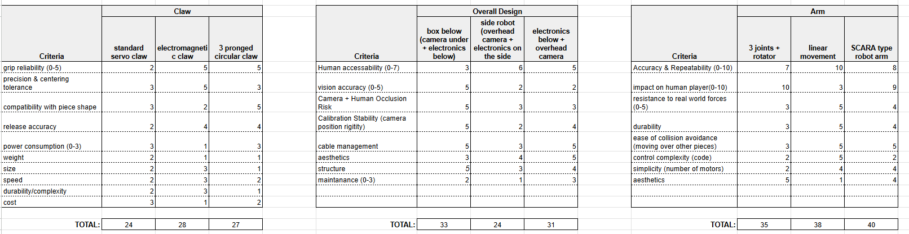
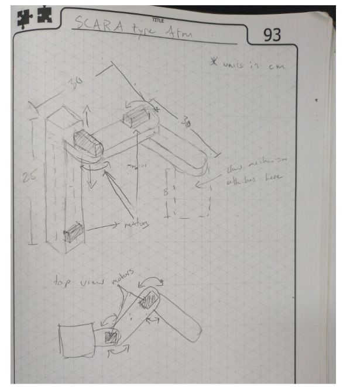
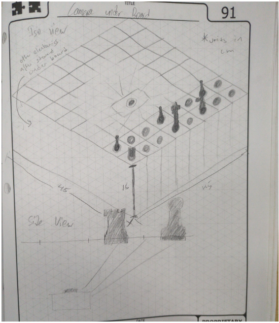
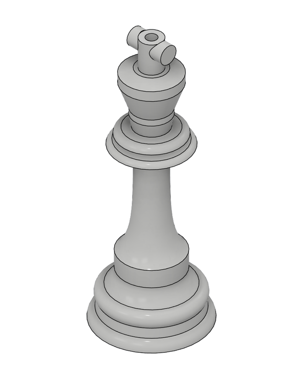
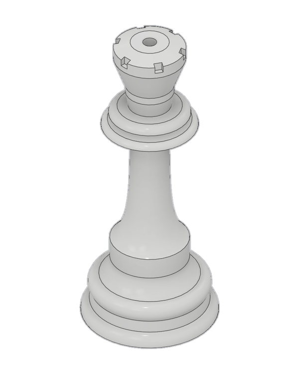
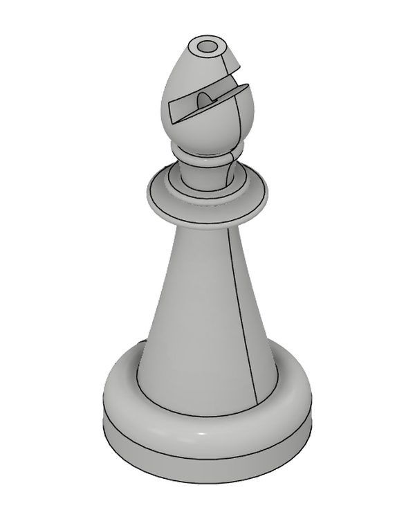
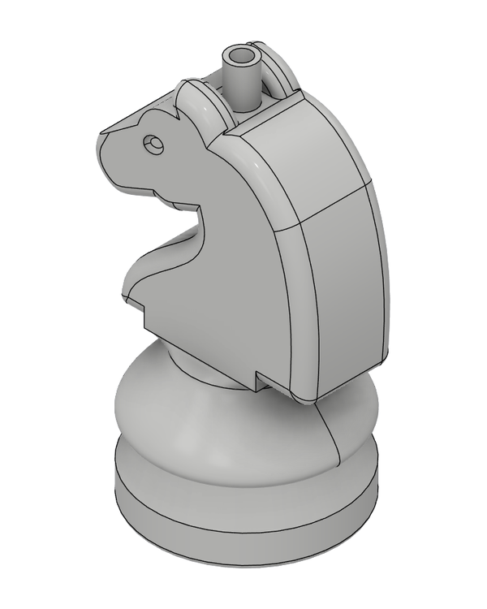
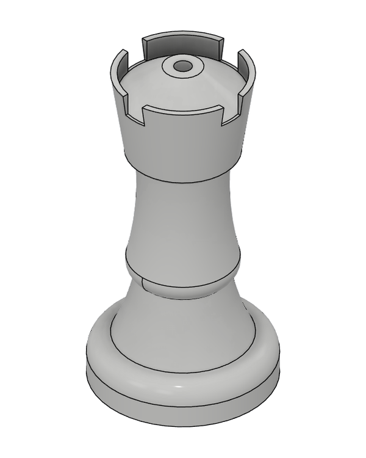
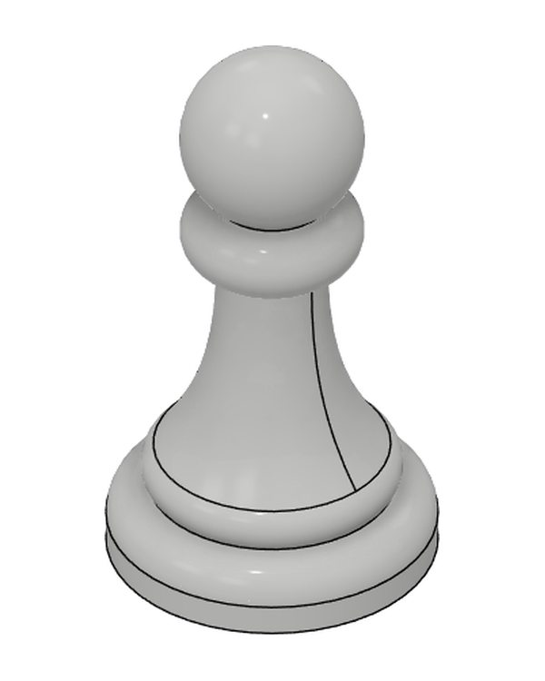

Choosing the design
Before building, we scored the options for three decisions: the pickup claw, the overall layout, and the arm. The highest total won each time.

The three decisions
| Decision | Winner | Why |
|---|---|---|
| Layout | Camera under the board | Scored 5 on human occlusion risk and 5 on calibration stability, against 3 and 2 for a robot beside the board. It lost points on human accessibility (3 vs 6), a trade we accepted for reliable vision. |
| Arm | SCARA | A linear gantry beat it on accuracy (10 vs 8), but scored 3 on impact on the human player against 9 for SCARA. SCARA won overall, 40 to 38. |
| Claw | Electromagnet | The score was close, so it needed testing for viability. After testing, it became the confirmed choice. |
Early sketches


The pieces
I designed the full set of chess pieces in CAD and 3D printed them. The tops are designed to take an M4 screw, which gives the electromagnet something to grip. The bases are sized to sit in the board's holes, so the camera can see them from below.






What we'd change
Putting everything in one box made the project compact and reliable, but it is bulky on a table, and the board's height means you have to stand to play. Next time we would either add more cameras to lower the board height, or choose an overhead camera design with piece recognition. Mechanically, the arm has a slight tilt that a more rigid design could remove.